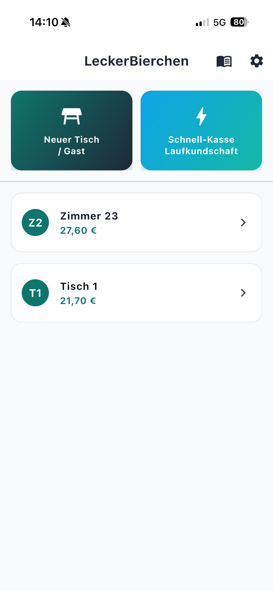
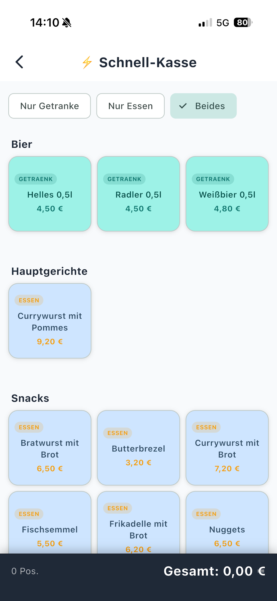
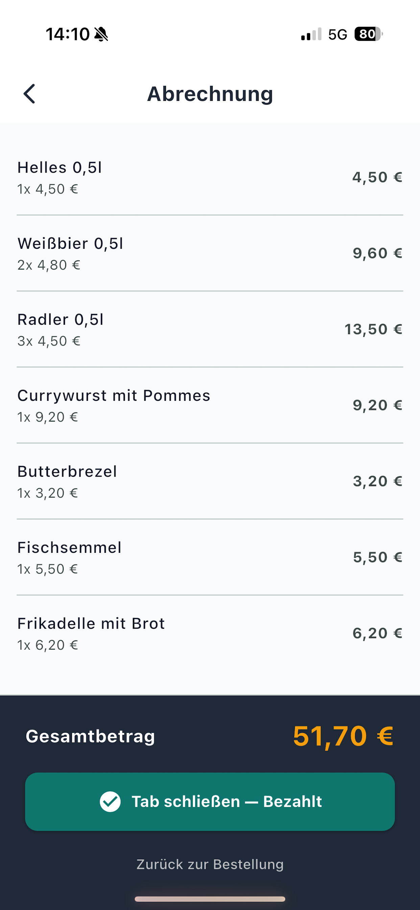

LeckerBierchen
Support & Outlook
This page gives a public overview of the LeckerBierchen app from my private repository. The app was created out of curiosity and for practical use in service work, and it is intentionally kept local and simple.
The focus is on a clear workflow for bar staff and waiters: manage tables and guests, record orders, keep track of open amounts, and maintain the drink menu in a straightforward way.
What the app covers
- Create new tables or guests
- Record orders and track open balances
- Support a simple quick-sale flow for walk-in customers
- Manage and maintain the drink menu
- Scan drink cards from photos and import them locally into the master data
- Store local settings such as the venue name
Important notes
- Drink card recognition runs locally on the device
- No external AI services are used for recognition
- Privacy and simple operation are the main priorities
- The app is currently part of a private repository and is not publicly released as a product
VibeCoding my own iPhone app.
The original idea was actually quite simple: try out whether you can really build an iOS app with current AI tools plus a bit of technical background, and what the journey to the App Store actually looks like.
Spoiler: it is much more complex than it looks at first glance. 😅
You quickly realize it is not enough to write a few prompts and click "Publish". Suddenly, you need:
- ✅ An Apple Developer account
- ✅ App Store Connect
- ✅ Screenshots and App Store metadata
- ✅ Privacy policies
- ✅ Support contacts
- ✅ Legal notice / imprint
- ✅ Your own website
And that is exactly why my own website was created along the way:
The name probably fits how I approach new technologies: first try, then understand, then learn and collect experience. 😉
By the way, the app itself does not follow a commercial goal. This is not about making money or building the next big startup. From day one, one question was at the center:
Can I do this, how does it work, and what do I learn from it?
That curiosity has repeatedly led me into new topics over the years, whether Intune, automation, PowerShell, AI, or now iOS development.
The real value does not come from the finished product, but from everything you learn on the way there.
Let us see which project comes next from "just a quick experiment". 😄
App screenshots



Support contact
Support by email: support@letmetrythis.dev
If you use LeckerBierchen and need help, feel free to contact me directly by email. I will reply as quickly as possible.
To help me support you faster, please include:
- A short description of the issue and what you expected
- The exact steps to reproduce the behavior
- Your device model and iOS version
- Optionally, a screenshot of the affected view
For general feedback, feature requests, or usability suggestions, the support address is also the right place.
Privacy: Privacy policy
Current focus areas
- Simpler and more efficient daily workflows
- Better offline functionality for mobile use
- More emphasis on privacy, stability, and straightforward administration
Planned features (outlook)
- More convenience for frequently used workflows
- Better reporting and quick overviews
- Additional export and share options
- More refined handling for everyday use
- Further performance and stability improvements